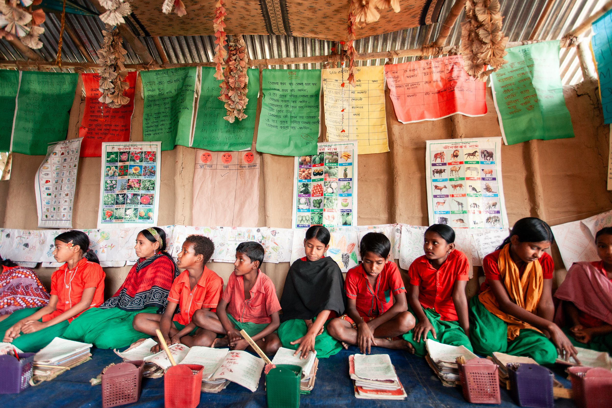
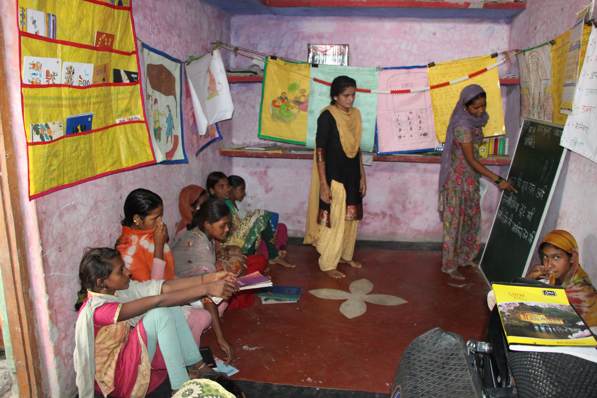
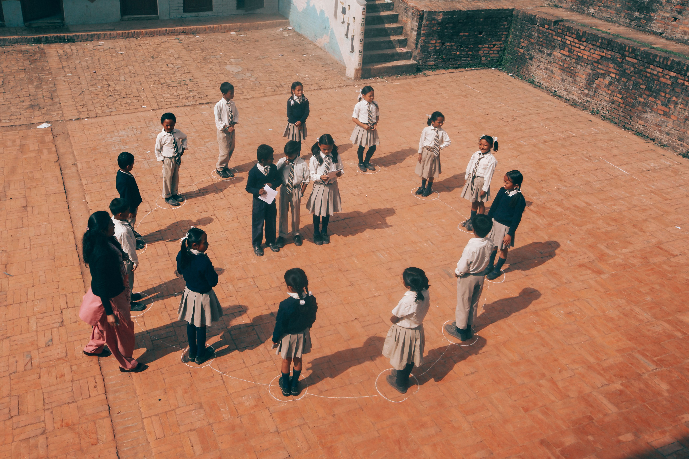
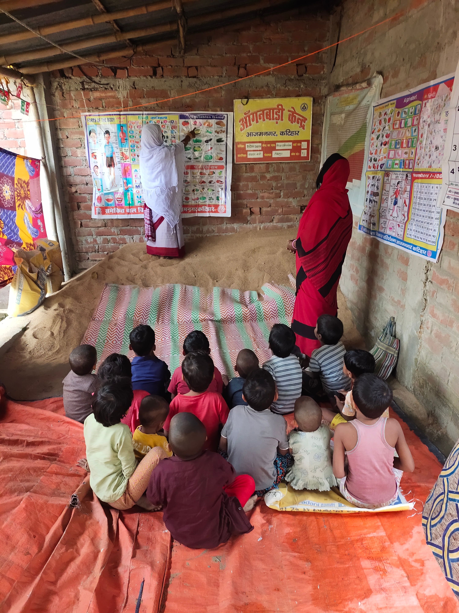

BrightPath
Learn · Grow · Succeed
Take Action →
BrightPath
Learn · Grow · Succeed
Take Action →
Empowering individuals and strengthening communities through accessible, inclusive, and lifelong learning opportunities across Sri Lanka.

Sri Lanka has achieved remarkable progress in primary education enrolment. However, significant challenges remain in ensuring quality, equitable, and lifelong learning for all. Many children in rural and estate areas, girls from low-income families, and working youth still face barriers such as long travel distances, lack of resources, language difficulties, and economic pressures.
Community learning programs address these gaps by delivering education at the doorstep of communities. They create safe, welcoming spaces where learning is not limited to textbooks but includes practical skills, values, and personal development. These programs are flexible, culturally sensitive, and directly respond to local needs.

The English and Digital for Girls’ Education (EDGE) initiative has established non-formal clubs that empower adolescent girls with essential English language skills, digital literacy, and leadership abilities. Through these clubs, girls gain confidence and open new opportunities for further education and employment. The program has reached thousands of girls across multiple provinces and continues to expand its impact.

In partnership with local organisations, UNICEF has promoted reading habits in post-conflict areas. By involving entire families, the program has improved literacy levels and created a culture of learning that extends beyond the classroom. Children are now more engaged and confident in their studies.
Most programs are designed and managed by local communities with support from NGOs and government partners. Sessions are usually held in the evenings or weekends to accommodate school-going children and working adults. Trained peer educators and volunteers use interactive methods such as group discussions, storytelling, hands-on activities, and digital tools where available.
The curriculum is often tailored to local realities — covering topics like financial literacy, health and hygiene, environmental awareness, and basic digital skills. Regular monitoring and feedback from participants ensure continuous improvement.
University students have tremendous potential to contribute. You can volunteer as a tutor, organise workshops, create learning materials, or document success stories. Your involvement not only helps the community but also builds your own skills and leadership experience.

Sharing your knowledge with younger students can inspire them and create a positive cycle of learning in your community.
Community learning programs have produced measurable positive outcomes across Sri Lanka. Many participants report improved confidence, better academic results, and clearer future aspirations. Parents become more involved in their children’s education, and entire communities develop a stronger culture of lifelong learning.
“Before joining the community club, I was shy and struggled with studies. Now I not only perform better at school but also teach younger children in my village. This program changed my life.”
— Tharshika, 14 years old, Kilinochchi
These grassroots efforts are making a meaningful contribution toward achieving Sustainable Development Goal 4.
All images are royalty-free and sourced from Pexels. Full photo credits and references are listed in the Page Editor.